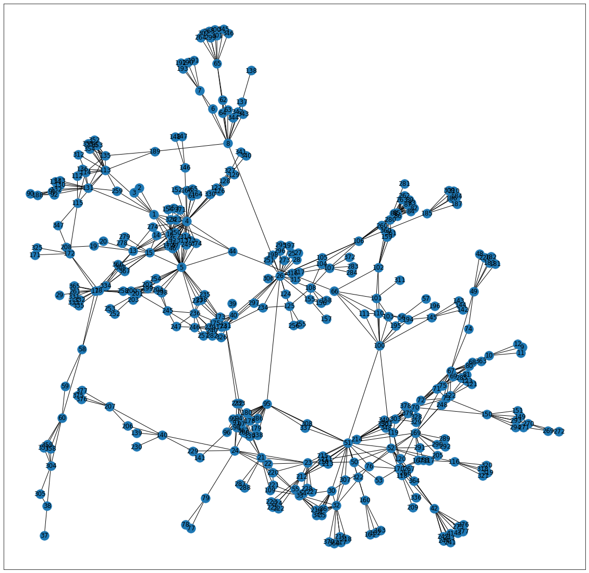
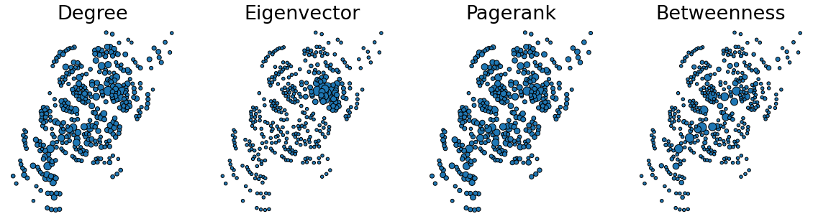
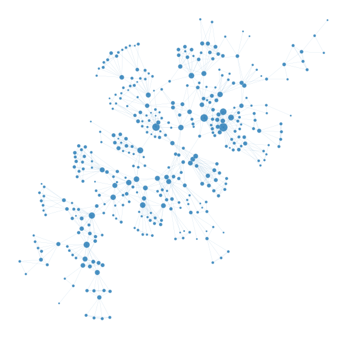
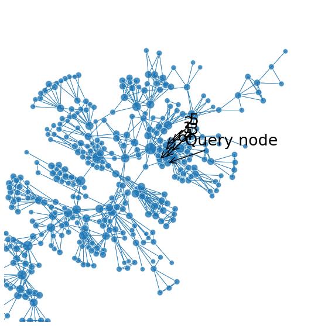

Network data scientists in California
Contents
Network data scientists in California¶
Author: Abdouh Harouna Kenfack
Dataset Description¶
This is network represents the colaboration betweeen Network Datascientist in California.
This is an unweighted and undirected network
Dataset format
SOURCE, TARGET
Nodes: 379
Edges: 914
Importing some libraries¶
#pip install graspologic
import networkx as nx
import seaborn as sns
import matplotlib.pyplot as plt
# pip install decorator==5.0.9
from scipy.sparse import csr_matrix
import numpy as np
#import graspologic as gs
import pandas as pd
import graspologic
#Navigating to my notebook
#cd /content/drive/MyDrive/Colab Notebooks/Network-DataScience
G = nx.read_edgelist("ca-netscience.txt")
#nx.draw_networkx(G)
nodelist = list(G.nodes)
A_Sparse = nx.to_scipy_sparse_matrix(G, nodelist) # Sparse matrix
A_Dense = nx.to_numpy_array(G, nodelist) # Dense Matrix
Heat Map of entire network!¶
import seaborn as sns
sns.heatmap(A_Dense)
<AxesSubplot:>
from graspologic.plot import heatmap
heatmap(A_Dense, cbar=False)
<AxesSubplot:>
Graphical layout of network¶
fig, ax = plt.subplots(1, 1, figsize=(20, 20))
nx.draw_networkx(G, ax=ax)

Node Analysis¶
Modularity¶
def map_to_nodes(node_map):
node_map.setdefault(0)
# utility function to make it easy to compare dicts to array outputs
return np.array(np.vectorize(lambda x: node_map.setdefault(x, 0))(nodelist))
map_to_nodes(dict(nx.eigenvector_centrality(G)))
array([1.48382672e-02, 1.39115522e-01, 1.48382672e-02, 4.14298692e-01,
3.56207610e-01, 3.46449843e-01, 8.85522193e-02, 2.22464490e-02,
2.13003615e-02, 1.47050164e-01, 1.76052647e-02, 1.20977984e-01,
1.09630675e-01, 2.55742521e-01, 2.36954156e-01, 2.18244351e-01,
2.18244351e-01, 5.61725592e-02, 6.06982816e-02, 6.06982816e-02,
6.18583023e-02, 4.07688406e-02, 3.99306209e-02, 8.11425010e-02,
8.11425010e-02, 5.61725592e-02, 5.61725592e-02, 5.61725592e-02,
2.18244351e-01, 2.18244351e-01, 1.07653647e-01, 5.15906274e-02,
1.34820719e-01, 1.34820719e-01, 1.06416363e-01, 1.06416363e-01,
5.75929460e-02, 7.33218874e-02, 1.15887671e-01, 8.54317807e-02,
5.89546347e-02, 7.53145489e-02, 5.89546347e-02, 6.03662239e-02,
6.55422806e-02, 4.06488868e-02, 6.15821576e-02, 5.15530587e-02,
5.15530587e-02, 4.15906815e-02, 5.00009823e-02, 1.76430795e-04,
1.68976712e-04, 1.57628479e-03, 2.29691747e-05, 1.92262521e-05,
2.12782166e-05, 2.12782166e-05, 1.15105922e-02, 2.07093341e-04,
1.90280072e-04, 1.90280072e-04, 1.91186517e-04, 1.90075590e-04,
2.99749509e-03, 1.88463769e-04, 1.88463769e-04, 1.51965514e-04,
1.50808276e-05, 2.31137694e-06, 2.31137694e-06, 2.31137694e-06,
6.85172235e-05, 1.85211205e-05, 3.61856820e-05, 2.58841449e-02,
2.56648351e-02, 1.30258143e-02, 1.29154502e-02, 2.72778538e-02,
2.72778538e-02, 3.66595272e-02, 3.49117427e-02, 3.49117427e-02,
3.49117427e-02, 2.49474827e-03, 5.07593394e-03, 5.50347552e-03,
2.35915389e-02, 4.96835916e-03, 4.96835916e-03, 1.25544367e-03,
4.68613072e-04, 2.14577646e-03, 6.32046579e-04, 2.08265984e-03,
3.80147419e-04, 2.43558849e-04, 5.33769518e-04, 2.95034574e-04,
7.64268052e-03, 7.64268052e-03, 1.88089109e-03, 2.28926731e-04,
2.28926731e-04, 1.50921478e-04, 5.41127087e-04, 3.58535616e-04,
6.75134871e-05, 6.75134871e-05, 6.75134871e-05, 6.75134871e-05,
2.04978814e-04, 2.31424207e-04, 2.23072202e-04, 1.37473203e-03,
1.37473203e-03, 1.37473203e-03, 5.42460741e-03, 1.48385326e-03,
1.79903444e-03, 1.63503132e-03, 1.79478833e-03, 1.84947780e-03,
1.86485395e-03, 1.32159006e-03, 2.19839149e-03, 1.36214549e-03,
1.10965199e-03, 1.22804843e-03, 7.63871698e-03, 1.22804843e-03,
1.10965199e-03, 1.22804843e-03, 1.22804843e-03, 7.42677891e-03,
1.10965199e-03, 1.37473203e-03, 1.37473203e-03, 1.37473203e-03,
7.61824935e-05, 1.58054898e-04, 1.72990479e-04, 7.61824935e-05,
8.37050098e-05, 7.69125933e-05, 1.48489244e-04, 7.69125933e-05,
2.08267397e-05, 2.08267397e-05, 2.08267397e-05, 6.91279499e-05,
1.85825880e-05, 1.85825880e-05, 8.53008980e-06, 8.22143762e-07,
7.92234287e-05, 8.45781603e-06, 5.22877257e-04, 6.53960681e-04,
6.53960681e-04, 7.05913578e-04, 1.87515980e-02, 1.87515980e-02,
5.90923012e-04, 4.13755180e-03, 6.34477046e-05, 1.12161520e-05,
9.90697328e-06, 1.03311874e-05, 1.03311874e-05, 1.03311874e-05,
1.03311874e-05, 1.49371779e-04, 8.90411964e-06, 8.90411964e-06,
8.90411964e-06, 5.54813618e-05, 9.14790661e-03, 9.65272186e-06,
1.11626009e-06, 8.92005842e-06, 1.47891511e-06, 1.47891511e-06,
1.61558962e-06, 1.30564776e-06, 2.91680263e-05, 1.57481142e-03,
5.99328759e-05, 1.49203231e-04, 2.16395421e-04, 5.81585391e-05,
2.16395421e-04, 4.06646216e-05, 3.86833655e-05, 5.46087661e-05,
5.46087661e-05, 5.17816000e-05, 3.30240811e-05, 3.42485322e-04,
1.24519288e-03, 3.59624361e-04, 3.39580677e-04, 5.44336265e-04,
5.71800137e-04, 7.77300423e-05, 7.77300423e-05, 7.77300423e-05,
2.14036405e-05, 3.07836107e-05, 2.89010288e-05, 2.67732133e-05,
2.67732133e-05, 2.41910530e-05, 2.04021726e-05, 2.04021726e-05,
1.18596824e-03, 1.20064996e-03, 1.15358238e-03, 8.69174327e-05,
3.43383900e-05, 4.06822338e-05, 2.92075126e-05, 2.84961308e-05,
1.69426239e-05, 2.31999216e-05, 1.56571282e-05, 3.15371760e-05,
1.56571282e-05, 2.59301724e-05, 1.54814836e-05, 7.80379833e-06,
5.72647660e-05, 1.60277964e-05, 5.91199160e-05, 6.45671348e-05,
2.08757654e-05, 2.08757654e-05, 5.11731314e-05, 5.11731314e-05,
5.11731314e-05, 5.11731314e-05, 2.08757654e-05, 2.08757654e-05,
2.18689224e-05, 2.18689224e-05, 2.48498223e-04, 2.17866862e-04,
2.17866862e-04, 4.33483420e-04, 4.33483420e-04, 2.17866862e-04,
4.33483420e-04, 2.17866862e-04, 1.69637987e-04, 1.69637987e-04,
3.01494921e-04, 4.22740807e-03, 8.14903843e-04, 4.22740807e-03,
4.04891753e-03, 4.15576903e-03, 4.04891753e-03, 4.04891753e-03,
1.21545079e-03, 2.83413524e-04, 2.83413524e-04, 2.85844766e-04,
3.16762931e-04, 2.83413524e-04, 2.83413524e-04, 2.05172555e-04,
1.62943102e-04, 1.62943102e-04, 1.43140303e-04, 1.58428170e-04,
1.58428170e-04, 1.73724005e-04, 2.75986679e-05, 2.66166912e-04,
1.93206582e-04, 1.14318828e-04, 1.15733510e-04, 1.44748976e-04,
1.43522105e-04, 1.43522105e-04, 1.86198644e-04, 1.97445018e-04,
1.97445018e-04, 1.78394964e-04, 3.11150730e-04, 3.11150730e-04,
3.05149334e-03, 5.80134852e-03, 3.61253544e-03, 7.27690065e-03,
4.19712922e-03, 2.70330809e-03, 4.63089738e-03, 4.63089738e-03,
4.63089738e-03, 4.63089738e-03, 4.63089738e-03, 8.78618388e-04,
5.57950002e-06, 5.57950002e-06, 5.57950002e-06, 5.57950002e-06,
8.04770406e-06, 7.94123016e-06, 9.79960015e-07, 2.34552395e-04,
2.34552395e-04, 1.76623251e-02, 1.76623251e-02, 6.59789017e-03,
6.59789017e-03, 1.83268536e-05, 2.23102110e-05, 2.47767878e-05,
2.55830834e-05, 2.23102110e-05, 2.30868737e-05, 2.30868737e-05,
2.30868737e-05, 4.34846053e-03, 4.34846053e-03, 2.96489532e-06,
2.29722680e-06, 3.45425490e-06, 2.71649665e-06, 2.78337075e-06,
2.69446431e-06, 1.31331582e-04, 6.49316313e-06, 7.06763639e-06,
6.49316313e-06, 3.43334124e-05, 3.26945183e-05, 1.81336818e-05,
1.70465490e-05, 2.32020791e-05, 1.70465490e-05, 1.45608365e-05,
5.30433142e-04, 5.30433142e-04, 2.80372605e-05, 2.80372605e-05,
2.34492401e-05, 2.59659054e-05, 2.59659054e-05, 3.46772570e-05,
1.86231798e-02, 1.86231798e-02, 2.68943011e-02, 8.03317024e-03,
8.03317024e-03, 3.05594995e-06, 3.05594995e-06, 3.05594995e-06,
1.43603015e-05, 1.43603015e-05, 1.56730895e-05, 1.43603015e-05,
1.43603015e-05, 3.01645865e-06, 3.01645865e-06, 3.01645865e-06,
3.01645865e-06, 2.12045151e-02, 1.79109528e-02, 1.05712712e-02,
8.20114797e-07, 5.19002871e-07, 1.39534383e-05, 4.97046803e-03,
4.97046803e-03, 4.97046803e-03, 4.97046803e-03])
A = A_Dense
g = G
import pandas as pd
import matplotlib.pyplot as plt
from graspologic.plot import networkplot
import seaborn as sns
from matplotlib import colors
node_data = pd.DataFrame(index=g.nodes())
node_data["degree"] = node_data.index.map(dict(nx.degree(g)))
node_data["eigenvector"] = node_data.index.map(nx.eigenvector_centrality(g))
node_data["pagerank"] = node_data.index.map(nx.pagerank(g))
node_data["betweenness"] = node_data.index.map(nx.betweenness_centrality(g))
pos = nx.kamada_kawai_layout(g)
node_data["x"] = [pos[node][0] for node in node_data.index]
node_data["y"] = [pos[node][1] for node in node_data.index]
sns.set_context("talk", font_scale=1.5)
fig, axs = plt.subplots(1, 4, figsize=(20, 5))
def plot_node_scaled_network(A, node_data, key, ax):
# REF: https://github.com/mwaskom/seaborn/blob/9425588d3498755abd93960df4ab05ec1a8de3ef/seaborn/_core.py#L215
levels = list(np.sort(node_data[key].unique()))
cmap = sns.color_palette("Blues", as_cmap=True)
vmin = np.min(levels)
norm = colors.Normalize(vmin=0.3 * vmin)
palette = dict(zip(levels, cmap(norm(levels))))
networkplot(
A,
node_data=node_data,
x="x",
y="y",
ax=ax,
edge_linewidth=1.0,
node_size=key,
# node_hue=key,
palette=palette,
node_sizes=(20, 200),
node_kws=dict(linewidth=1, edgecolor="black"),
node_alpha=1.0,
edge_kws=dict(color=sns.color_palette()[0])
)
ax.axis("off")
ax.set_title(key.capitalize())
ax = axs[0]
plot_node_scaled_network(A_Dense, node_data, "degree", ax)
ax = axs[1]
plot_node_scaled_network(A_Dense, node_data, "eigenvector", ax)
ax = axs[2]
plot_node_scaled_network(A_Dense, node_data, "pagerank", ax)
ax = axs[3]
plot_node_scaled_network(A_Dense, node_data, "betweenness", ax)
fig.set_facecolor("w")

sns.pairplot(node_data, vars=['degree', 'eigenvector', 'pagerank', 'betweenness'], height=4)
<seaborn.axisgrid.PairGrid at 0x7fba9883d3a0>
# A_ptr = gs.utils.pass_to_ranks(A_unDense) # can skip for an unweighted network
A_sparse = csr_matrix(A_Dense)
n_components = 15
ase = graspologic.embed.AdjacencySpectralEmbed(n_components=n_components, check_lcc=False)
ase_embedding = ase.fit_transform(A_sparse)
from umap import UMAP
umapper = UMAP(n_neighbors=15, metric="cosine", min_dist=0.8)
umap_embedding = umapper.fit_transform(ase_embedding)
graspologic.plot.networkplot(
A_sparse,
x=umap_embedding[:, 0],
y=umap_embedding[:, 1],
edge_linewidth=0.2,
edge_alpha=0.4,
node_kws=dict(
s=50, # s will change the size of nodes)
),
)
<AxesSubplot:xlabel='x', ylabel='y'>
Community Detection¶
Greedy Modularity
from networkx.algorithms.community import greedy_modularity_communities
c = list(greedy_modularity_communities(G))
print('Number of detected communities: ', len(c))
Number of detected communities: 19
from graspologic.utils import largest_connected_component
A_lcc = largest_connected_component(A_Dense)
A_lcc.shape
(379, 379)
print("The largest connected network looks like: ", A_lcc)
The largest connected network looks like: [[0. 1. 1. ... 0. 0. 0.]
[1. 0. 1. ... 0. 0. 0.]
[1. 1. 0. ... 0. 0. 0.]
...
[0. 0. 0. ... 0. 1. 1.]
[0. 0. 0. ... 1. 0. 1.]
[0. 0. 0. ... 1. 1. 0.]]
node_data
| degree | eigenvector | pagerank | betweenness | x | y | |
|---|---|---|---|---|---|---|
| 2 | 2 | 0.014838 | 0.001359 | 0.000000 | 0.324836 | 0.368491 |
| 1 | 10 | 0.139116 | 0.004539 | 0.091461 | 0.243478 | 0.270726 |
| 3 | 2 | 0.014838 | 0.001359 | 0.000000 | 0.270921 | 0.371441 |
| 4 | 34 | 0.414299 | 0.014519 | 0.152056 | 0.372410 | 0.143599 |
| 5 | 27 | 0.356208 | 0.010773 | 0.250628 | 0.256945 | 0.196155 |
| ... | ... | ... | ... | ... | ... | ... |
| 281 | 1 | 0.000014 | 0.001075 | 0.000000 | 0.373865 | -0.450532 |
| 332 | 4 | 0.004970 | 0.002261 | 0.000000 | 0.707476 | 0.034854 |
| 331 | 4 | 0.004970 | 0.002261 | 0.000000 | 0.718229 | 0.075693 |
| 333 | 4 | 0.004970 | 0.002261 | 0.000000 | 0.722604 | 0.118258 |
| 335 | 4 | 0.004970 | 0.002261 | 0.000000 | 0.719740 | 0.162885 |
379 rows × 6 columns
What Next?¶
#adj = nx.to_scipy_sparse_matrix(G_un, nodelist=nodelist)
adj = nx.to_numpy_array(G, nodelist=nodelist)
from graspologic.plot import networkplot
node_data["degree"] = np.array(np.sum(adj, axis=1))
fig, ax = plt.subplots(1, 1, figsize=(10, 10))
ax = networkplot(
adj,
x="x",
y="y",
node_data=node_data.reset_index(),
# node_hue="label",
node_size="degree",
node_sizes=(10, 200),
ax=ax,
edge_linewidth=0.2,
edge_alpha=0.2,
)
_ = ax.axis("off")

# adj = pd.read_csv("soc-sign-bitcoinotc.csv", header=None)
adj = nx.to_numpy_array(G, nodelist=nodelist)
from graspologic.embed import node2vec_embed
node2vec_embedding, node_ids = node2vec_embed(
G,
dimensions=16,
num_walks=10,
walk_length=16,
inout_hyperparameter=1.0,
return_hyperparameter=1.0,
random_seed=8888,
)
/opt/anaconda3/lib/python3.8/site-packages/graspologic/utils/utils.py:1090: UserWarning: Graph has at least one unweighted edge using weight_attribute "weight". Defaulting unweighted edges to "1.0"
warnings.warn(
WARNING:gensim.models.base_any2vec:under 10 jobs per worker: consider setting a smaller `batch_words' for smoother alpha decay
A_Dense.shape
(379, 379)
nodesN = list(G.nodes)
len(nodesN)
379
Community Detection¶
from sklearn.neighbors import NearestNeighbors
nn = NearestNeighbors(n_neighbors=7, metric="euclidean")
nn.fit(node2vec_embedding)
query_node = 15
dists, neighbor_indices = nn.kneighbors(
node2vec_embedding[query_node, :].reshape(1, -1)
)
neighbor_indices = np.squeeze(neighbor_indices)
neighbor_indices
ax = networkplot(
adj,
x="x",
y="y",
node_data=node_data.reset_index(),
# node_hue="label",
node_size="degree",
node_sizes=(70, 500),
edge_linewidth=0.8,
edge_alpha=0.8,
)
ax.axis("off")
def get_location(node_index):
return np.array(node_data.iloc[node_index][["x", "y"]])
center = get_location(query_node)
pad = 0.9
ax.set(xlim=(center[0] - pad, center[0] + pad), ylim=(center[1] - pad, center[1] + pad))
_ = ax.figure.set_facecolor("w")
def annotate(node_index, text, ax):
xy = get_location(node_index)
ax.annotate(
text,
xy,
xytext=(30, 30),
textcoords="offset points",
arrowprops=dict(arrowstyle="->"),
)
annotate(query_node, "Query node", ax)
for i, node_index in enumerate(neighbor_indices[1:]):
annotate(node_index, i + 1, ax)

def plot_neighbor_query(query_node, nn, pad=1.0):
dists, neighbor_indices = nn.kneighbors(
node2vec_embedding[query_node, :].reshape(1, -1)
)
neighbor_indices = np.squeeze(neighbor_indices)
ax = networkplot(
adj,
x="x",
y="y",
node_data=node_data.reset_index(),
# node_hue="label",
node_size="degree",
node_sizes=(70, 500),
edge_linewidth=0.8,
edge_alpha=0.8,
)
ax.axis("off")
center = get_location(query_node)
ax.set(
xlim=(center[0] - pad, center[0] + pad), ylim=(center[1] - pad, center[1] + pad)
)
_ = ax.figure.set_facecolor("w")
annotate(query_node, "Query node", ax)
for i, node_index in enumerate(neighbor_indices[1:]):
annotate(node_index, i + 1, ax)
return ax
nn = NearestNeighbors(n_neighbors=6, metric="euclidean")
nn.fit(node2vec_embedding)
plot_neighbor_query(1, nn, pad=0.4)
plot_neighbor_query(150, nn, pad=1.0)
plot_neighbor_query(300, nn, pad=1.0)
<AxesSubplot:xlabel='x', ylabel='y'>
node_data
| degree | eigenvector | pagerank | betweenness | x | y | |
|---|---|---|---|---|---|---|
| 0 | 208.0 | 4.930744e-02 | 0.000978 | 0.004392 | 0.034039 | 0.037749 |
| 1 | 16.0 | 4.996216e-03 | 0.000075 | 0.000000 | 0.096296 | 0.197689 |
| 2 | 2.0 | 1.408504e-01 | 0.005041 | 0.052810 | -0.000423 | 0.053271 |
| 3 | 25.0 | 9.696629e-03 | 0.000342 | 0.000696 | 0.038740 | 0.133278 |
| 4 | 60.0 | 3.898511e-02 | 0.001374 | 0.007283 | 0.069127 | 0.137994 |
| ... | ... | ... | ... | ... | ... | ... |
| 5876 | 0.0 | 2.425153e-22 | 0.000170 | 0.000000 | 0.170232 | -0.082579 |
| 5877 | 0.0 | 2.425153e-22 | 0.000170 | 0.000000 | 0.170929 | 0.081293 |
| 5878 | 0.0 | 6.706815e-05 | 0.000045 | 0.000000 | 0.609357 | -0.125699 |
| 5879 | 0.0 | 2.717411e-03 | 0.000052 | 0.000000 | 0.378160 | 0.024618 |
| 5880 | 0.0 | 2.717411e-03 | 0.000052 | 0.000000 | 0.395630 | 0.072697 |
5881 rows × 6 columns
from graspologic.partition import leiden, modularity
from graspologic.utils import symmetrize, is_symmetric
# A_sym = symmetrize(A_unDense)
leiden_partition_map = leiden(A_Dense, random_seed=7)
type(leiden_partition_map)
dict
leiden_partition_map = leiden(G, random_seed=6)
modularity(G, leiden_partition_map)
0.8478134920444915
node_df = pd.DataFrame(index=nodelist)
def plot_network_partition(adj, node_data, partition_key):
fig, axs = plt.subplots(1, 2, figsize=(15, 7))
networkplot(
adj,
x="x",
y="y",
node_data=node_df.reset_index(),
node_alpha=0.9,
edge_alpha=0.7,
edge_linewidth=0.4,
node_hue=partition_key,
node_size="degree",
# edge_hue="source",
ax=axs[0],
)
_ = axs[0].axis("off")
_ = heatmap(
adj,
inner_hier_labels=node_data[partition_key],
ax=axs[1],
cbar=False,
cmap="Purples",
vmin=0,
center=None,
sort_nodes=True,
)
return fig, ax
#pos = nx.kamada_kawai_layout(G_unD)
xs = []
ys = []
for node in nodelist:
xs.append(pos[node][0])
ys.append(pos[node][1])
xs = np.array(xs)
ys = np.array(ys)
node_df["x"] = xs
node_df["y"] = ys
n = adj.shape[0]
node_df["degree"] = adj.sum(axis=0)
node_df['leiden_partition'] = node_df.index.map(leiden_partition_map)
#plot_network_partition(adj, node_df, 'leiden_partition')
plot_network_partition(adj, node_df, 'leiden_partition')
(<Figure size 1080x504 with 4 Axes>, <AxesSubplot:xlabel='x', ylabel='y'>)
# https://networkrepository.com/ca-netscience.php